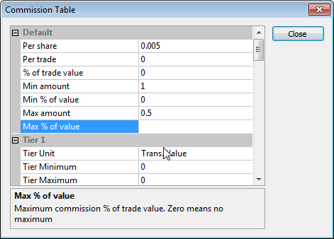

The commission table is available in the Account manager and in the Automatic Analysis -> Settings window, "General" tab, under "Commission and rates: Define..."
In this window, you can enter commissions for buy/sell transactions.
There are 5 tiers in the commission schedule table, plus a "default" tier that is used when others are not defined or a transaction does not match any defined tier. Tiers can be defined based on transaction value or number of shares/contracts traded. Each tier has a user-definable minimum and maximum. If min/max is not defined or set to zero, the tier is not active.
Each tier allows defining commission on a per-share, per-trade, or percentage of trade volume basis, and allows defining minimum and maximum commission values based on dollar or percentage values.